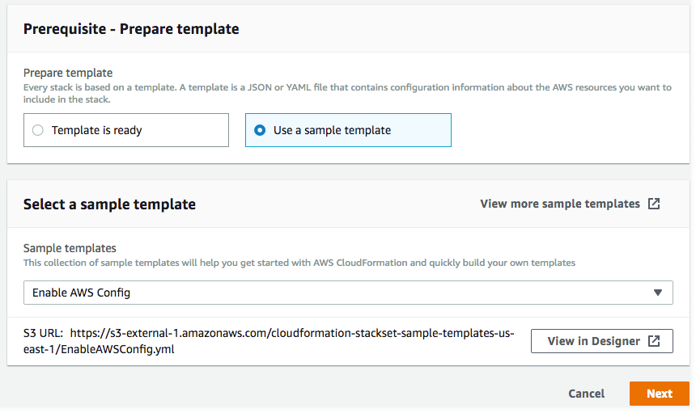

Creación de un conjunto de pilas
Puede crear un conjunto de pilas mediante la AWS Management Console o los comandos AWS CloudFormation de la AWS CLI. Puede crear un conjunto de pilas con cualquiera permiso self-managed o service-managed.
Con los permisos self-managed, puede implementar instancias de pila en Cuentas de AWS específicas de regiones determinadas. Para ello, primero debe crear los roles de IAM necesarios para establecer una relación de confianza entre la cuenta desde la que está administrando el conjunto de pilas y la cuenta en la que está implementando instancias de pila.
Con los permisos service-managed, puede implementar instancias de pila en cuentas administradas por AWS Organizations en regiones específicas. Con este modelo, no es necesario crear los roles de IAM necesarios; StackSets crea los roles de IAM en su nombre. También puede habilitar implementaciones automáticas en cuentas que se añaden a una organización o unidad organizativa (OU) de destino en el futuro. Con las implementaciones automáticas habilitadas, StackSets elimina automáticamente instancias de pila de una cuenta si se quita de una organización u unidad organizativa de destino.
Temas
Creación de un conjunto de pilas con permisos autoadministrados
Temas
Creación de un conjunto de pilas con permisos autoadministrados mediante la AWS Management Console
Abra la consola de AWS CloudFormation en https://console.aws.amazon.com/cloudformation
. -
En el panel de navegación, seleccione StackSets (Conjuntos de pilas).
-
En la parte superior de la página StackSets (Conjuntos de pilas), seleccione Create StackSet (Crear conjunto de pilas).
-
En Prerequisite - Prepare template (Requisito previo: preparar plantilla), elija Use a sample template (Usar una plantilla de ejemplo).
-
En la opción Seleccionar una plantilla de muestra del menú desplegable, seleccione la plantilla Habilitar AWS Config. Seleccione Siguiente.
 -
En la página Specify StackSet details (Especificar detalles del conjunto de pilas), indique la siguiente información.
-
Proporcione un nombre para el conjunto de pilas. Los nombres de conjuntos de pilas deben comenzar por un carácter alfabético, y solo pueden contener letras, números y guiones. En este tutorial, usamos el nombre
my-awsconfig-stackset. -
Se le pedirá que especifique los valores de los parámetros que se utilizan en AWS Config. Para obtener más información acerca de estos parámetros, consulte Configuración de AWS Config con la consola en la Guía para desarrolladores de AWS Config. En este tutorial, vamos a dejar la configuración predeterminada para todos los parámetros de AWS Config.
-
Puede configurar las actualizaciones de Amazon Simple Notification Service (SNS) por correo electrónico, en función del contenido del registro, utilizando los parámetros TopicARN y NotificationEmail. A efectos de este tutorial, no configuramos las actualizaciones de Amazon SNS.
-
Puede configurar el canal de entrega para actualizaciones y notificaciones con los parámetros DeliveryChannelName y Frequency. Para obtener más información sobre el canal de entrega en AWS Config, consulte Administrar el canal de entrega en la Guía para desarrolladores de AWS Config. A efectos de este tutorial, dejamos la configuración predeterminada en esta área.
-
-
Cuando haya terminado de especificar lo parámetros de AWS Config, seleccione Next (Siguiente).
-
En la página Configure StackSet options (Configurar opciones del conjunto de pilas), añada una etiqueta especificando un par de clave y valor. En este tutorial, creamos una etiqueta denominada Stage (Fase), con un valor de Test (Prueba). Las etiquetas que se aplican a los conjuntos de pila se aplican a todos los recursos creados por las pilas. Para obtener más información acerca del uso de etiquetas en AWS, consulte Uso de etiquetas de asignación de costos en la Guía del usuario de AWS Billing and Cost Management.
Deje Permissions (Permisos) sin especificar.
-
Para Execution configuration (Configuración de ejecución), elija Active (Activo) para que StackSets lleve a cabo operaciones sin conflictos simultáneamente y ponga en cola las operaciones en conflicto. Una vez finalizadas las operaciones en conflicto, StackSets inicia las operaciones en cola por orden de solicitud.
nota
Si ya hay operaciones en ejecución o en cola, StackSets pone en cola todas las operaciones entrantes aunque no entren en conflicto.
No puede modificar la configuración de ejecución de su conjunto de pilas mientras haya operaciones en ejecución o en cola para ese conjunto de pilas.
-
Elija Siguiente.
-
En la página Set deployment options (Establecer opciones de implementación), proporcione las cuentas y regiones en las que desea pilas implantadas en el conjunto de pilas.
AWS CloudFormation implementará pilas en las cuentas especificadas en la primera región, a continuación pasará a la siguiente y así sucesivamente, mientras los fallos de implementación de una región no superen la tolerancia de fallos especificada.
-
Para Accounts (Cuentas), seleccione Deploy stacks in accounts (Implementar pilas en cuentas). Pegue sus números de cuenta de destino en el cuadro de texto, separando los distintos números con comas..
-
Para Specify regions (Especificar regiones), elija Región EE.UU. Este (Norte de Virginia). Repita el proceso para Región EE.UU. Oeste (Oregón). Seleccione la flecha hacia arriba que aparece junto a Región EE.UU. Oeste (Oregón) para moverla a la primera posición de la lista. El orden de las regiones en Especificar regiones determina su orden de implementación.
-
Para Deployment options (Opciones de implementación):
-
En Maximum concurrent accounts (Máximo de cuentas simultáneas), mantenga los valores predeterminados de Number (Número) y 1.
Esto significa que AWS CloudFormation implementa la pila en tan solo una cuenta a la vez.
-
Para Tolerancia a errores, mantenga los valores predeterminados de Número y 0.
Esto significa que puede fallar un máximo de una implementación de pila en una de las regiones especificadas antes de que AWS CloudFormation detenga la implementación en la región actual y cancele la implementación en las regiones restantes.
-
-
En Region concurrency (Simultaneidad de región):
-
Seleccione Sequential (Secuencial) o Parallel (Paralela) a fin de determinar el orden de implementación de StackSets para las regiones especificadas. El orden Sequential (Secuencial) está seleccionado de forma predeterminada.
Seleccione Siguiente.
-

-
-
En la página Review, revise sus opciones y las propiedades del conjunto de pilas. Para realizar cambios, seleccione Edit (Editar) en el área en la que desea cambiar las propiedades. Antes de crear el conjunto de pilas, debe rellenar la casilla de verificación en el área Capabilities (Capacidades) para reconocer que algunos de los recursos que está creando con el conjunto de pilas podrían necesitar nuevos recursos y permisos de IAM. Para obtener más información acerca de los permisos que puedan ser obligatorios, consulte Reconocimiento de recursos de IAM en plantillas de AWS CloudFormation en esta guía. Cuando lo tenga todo listo para crear su conjunto de pilas, elija Submit (Enviar).

-
AWS CloudFormation inicia la creación del conjunto de pilas. Vea el progreso y el estado de la creación de las pilas en la página de detalles del conjunto de pilas que se abre al elegir Submit (Enviar).

Creación de un conjunto de pilas con permisos autoadministrados mediante la AWS CLI
Al crear conjuntos de pilas utilizando los comandos de AWS CLI, ejecute dos comandos separados: create-stack-set para cargar su plantilla y crear el contenedor del conjunto de pilas y create-stack-instances para crear las pilas dentro de un conjunto de pilas. Comience ejecutando un comando de AWS CLI, create-stack-set, para cargar la plantilla de AWS CloudFormation de muestra que activa AWS Config y, a continuación, comience a crear el conjunto de pilas.
-
Abra la AWS CLI.
-
Ejecute el siguiente comando.
Para el parámetro
--template-url, proporcione la dirección URL del bucket de Amazon S3 en el que está almacenando la plantilla. En esta guía, usamosmy-awsconfig-stacksetcomo el valor del parámetro--stack-set-name. También activamos--managed-executionpara que StackSets lleve a cabo operaciones sin conflictos simultáneamente y ponga en cola las operaciones en conflicto. Una vez finalizadas las operaciones en conflicto, StackSets inicia las operaciones en cola por orden de solicitud.nota
Si ya hay operaciones en ejecución o en cola, StackSets pone en cola todas las operaciones entrantes aunque no entren en conflicto.
No puede modificar la configuración de ejecución de su conjunto de pilas mientras haya operaciones en ejecución o en cola para ese conjunto de pilas.
aws cloudformation create-stack-set \ --stack-set-name my-awsconfig-stackset \ --template-url https://s3.amazonaws.com/cloudformation-stackset-sample-templates-us-east-1/EnableAWSConfig.yml -
Una vez finalizado el comando
create-stack-set, ejecute el comandolist-stack-setspara ver el conjunto de pilas que se ha creado. Debería ver el nuevo conjunto de pilas en los resultados.aws cloudformation list-stack-sets -
Ejecute el comando de AWS CLI
create-stack-instancespara añadir instancias de pila al conjunto de pilas. En este tutorial, usamosus-west-2yus-east-1como los valores del parámetro--regions.Defina la tolerancia a fallos y el número máximo de cuentas simultáneas estableciendo
FailureToleranceCounten0yMaxConcurrentCounten1en el parámetro--operation-preferences, tal y como se muestra en el siguiente ejemplo. Para aplicar porcentajes en su lugar, utiliceFailureTolerancePercentageoMaxConcurrentPercentage. A efectos de este tutorial, utilizamos el número, no el porcentaje.nota
El valor
MaxConcurrentCountdepende del valor deFailureToleranceCount.MaxConcurrentCountserá como máximo, uno más queFailureToleranceCount.aws cloudformation create-stack-instances \ --stack-set-name my-awsconfig-stackset \ --accounts '["account_ID_1","account_ID_2"]' \ --regions '["region_1","region_2"]' \ --operation-preferences FailureToleranceCount=0,MaxConcurrentCount=1nota
La simultaneidad de las implementaciones de instancias de StackSet en la operación depende del valor de
FailureToleranceCount-MaxConcurrentCounty es, como máximo, uno más queFailureToleranceCount.importante
Espere hasta que se complete una operación antes de iniciar otra. Puede ejecutar una sola operación a la vez.
-
Compruebe que las instancias de pila se hayan creado correctamente. Ejecute
DescribeStackSetOperationcon eloperation-idque se devuelve como parte de la salida del paso 4.aws cloudformation describe-stack-set-operation \ --stack-set-name my-awsconfig-stackset \ --operation-idoperation_ID
Creación de un conjunto de pilas con permisos administrados por servicios
Temas
Consideraciones al crear un conjunto de pilas con permisos administrados por servicios
Antes de crear un conjunto de pilas con permisos administrados por servicios, tenga en cuenta lo siguiente:
-
Los conjuntos de pila con permisos administrados por servicios se crean en la cuenta de gestión, incluidos los conjuntos de pila creados por administradores delegados.
-
El conjunto de pilas puede dirigirse a toda la organización o a las unidades organizativas (OU) especificadas. Si el conjunto de pilas se dirige a su organización, también se dirige a todas las cuentas de todas las unidades organizativas de la organización. Si el conjunto de pilas se dirige a unidades organizativas especificadas, también se dirige a todas las cuentas en esas unidades organizativas.
-
Si el conjunto de pilas se dirige a una unidad organizativa principal, el conjunto de pilas también se dirige a cualquier unidad organizativa secundaria.
-
Varios conjuntos de pila pueden dirigirse a la misma organización o unidad organizativa.
-
El conjunto de pilas no puede dirigirse a cuentas fuera de la organización.
-
El conjunto de pilas no puede implementar pilas anidadas.
-
StackSets no implementa instancias de pila en la cuenta de administración de la organización, incluso si la cuenta de administración está en su organización o en una unidad organizativa de su organización.
-
La implementación automática se establece en el nivel de conjunto de pilas. No puede ajustar las implementaciones automáticas selectivamente para unidades organizativas, cuentas o regiones.
-
Los permisos de la entidad principal de IAM (usuario, rol o grupo) que utiliza para iniciar sesión en la cuenta de administración determinan si está autorizado para la implementación con StackSets. Para ver un ejemplo de una política de IAM que concede permiso de implementación en una organización, consulte Política de ejemplo que concede permisos de conjuntos de pilas administrados por servicio.
-
Los administradores delegados tienen permisos completos para implementar en cuentas de la organización. La cuenta de administración no puede limitar los permisos del administrador delegado para la implementación en unidades de organización específicas o para la realización de operaciones específicas de conjuntos de pilas.
Creación de un conjunto de pilas con permisos administrados por servicios mediante la consola de AWS CloudFormation
-
Abra la consola de AWS CloudFormation en https://console.aws.amazon.com/cloudformation
. -
En el panel de navegación, seleccione StackSets (Conjuntos de pilas).
-
En la parte superior de la página StackSets (Conjuntos de pilas), seleccione Create StackSet (Crear conjunto de pilas).
-
En Prepare template (Preparar plantilla), elija Template is ready (La plantilla está lista).
-
En Especificar plantilla, elija especificar la dirección URL del bucket de S3 que contiene la plantilla de pila o cargar un archivo de plantilla de pila. Elija Siguiente.
-
En la página Especificar detalles de StackSet proporcione un nombre para el conjunto de pilas, especifique los parámetros y, a continuación, elija Siguiente.
-
En la página Configurar opciones de StackSet, en Etiquetas, especifique las etiquetas que se aplicarán a los recursos de la pila.
-
En Permisos, elija Permisos administrados por servicios.
Si el acceso de confianza con AWS Organizations está deshabilitado, aparecerá un banner. Se requiere acceso de confianza para crear o actualizar un conjunto de pilas con permisos administrados por servicios. Solo el administrador de la cuenta de administración de la organización tiene permisos para Activar el acceso de confianza con AWS Organizations.

-
Para Execution configuration (Configuración de ejecución), elija Active (Activo) para que StackSets lleve a cabo operaciones sin conflictos simultáneamente y ponga en cola las operaciones en conflicto. Una vez finalizadas las operaciones en conflicto, StackSets inicia las operaciones en cola por orden de solicitud.
nota
Si ya hay operaciones en ejecución o en cola, StackSets pone en cola todas las operaciones entrantes aunque no entren en conflicto.
No puede modificar la configuración de ejecución de su conjunto de pilas mientras haya operaciones en ejecución o en cola para ese conjunto de pilas.
-
Seleccione Siguiente para continuar y activar el acceso de confianza si aún no está activado.
-
En la página Establecer opciones de implementación en Destinos de implementación, seleccione las cuentas de la organización en las que desee realizar la implementación.
-
Elija Implementar en la organización para realizar la implementación en todas las cuentas de la organización.

-
Elija Implementar en unidades organizativas (OU) para implementarlas en todas las cuentas de unidades organizativas específicas. Elija Añadir una unidad organizativa, y, a continuación, pegue el ID de unidad organizativa de destino en el cuadro de texto. Repita para cada nueva unidad organizativa de destino.

-
-
En Implementación automática, elija si StackSets se implementará automáticamente en cuentas que se añadirán a la organización u unidades organizativas de destino en el futuro.

-
Si ha habilitado la implementación automática, en Comportamiento de eliminación de cuentas, elija si los recursos de pila se conservan o eliminan cuando se quita una cuenta de una organización u unidad organizativa de destino.

nota
Con la opción Conservar pilas seleccionadas, las instancias de pila se eliminan del conjunto de pilas, pero las pilas y sus recursos asociados se conservan. Los recursos permanecen en su estado actual, pero ya no formarán parte del conjunto de pilas.
-
En Regiones de implementación, seleccione las regiones en las que desee implementar instancias de pila. Elija Siguiente.
-
En la página Review (Revisar), compruebe que StackSet se implemente en las cuentas correctas en las regiones adecuadas y, a continuación, elija Create StackSet (Crear StackSet).
Se abrirá la página Detalles de StackSet details. Puede ver el progreso y el estado de la creación de las pilas en su conjunto de pilas.
Creación de un conjunto de pilas con permisos administrados por servicios mediante la AWS CLI
Cuando se crean conjuntos de pilas mediante AWS CLI, se ejecutan dos comandos independientes. Durante create-stack-set, se carga la plantilla, se crea el contenedor del conjunto de pilas y se administran implementaciones automáticas. Durante create-stack-instances, se crean instancias de pila en cuentas de destino específicas.
Al actuar como administrador delegado, debe establecer el parámetro --call-as en DELEGATED_ADMIN cada vez que ejecute un comando StackSets.
--call-asDELEGATED_ADMIN
Los conjuntos de pila creados por un administrador delegado se crean en la cuenta de gestión de la organización.
-
Abra la AWS CLI.
-
Ejecute el comando
create-stack-set.En el siguiente ejemplo, habilitamos las implementaciones automáticas para permitir a StackSets llevar a cabo la implementación automática en cuentas que se agregan a la organización u unidades organizativas de destino en el futuro. También retenemos recursos de pila cuando se elimina una cuenta de una organización o unidad organizativa de destino. También activamos
--managed-executionpara que StackSets lleve a cabo operaciones sin conflictos simultáneamente y ponga en cola las operaciones en conflicto. Una vez finalizadas las operaciones en conflicto, StackSets inicia las operaciones en cola por orden de solicitud.nota
Si ya hay operaciones en ejecución o en cola, StackSets pone en cola todas las operaciones entrantes aunque no entren en conflicto.
No puede modificar la configuración de ejecución de su conjunto de pilas mientras haya operaciones en ejecución o en cola para ese conjunto de pilas.
aws cloudformation create-stack-set \ --stack-set-nameStackSet_myApp\ --template-urlhttps://s3.us-west-2.amazonaws.com/cloudformation-templates-us-west-2/MyApp.template\ --permission-modelSERVICE_MANAGED\ --auto-deployment Enabled=true,RetainStacksOnAccountRemoval=true -
Una vez finalizado el comando
create-stack-set, ejecute el comandolist-stack-setspara confirmar el conjunto de pilas que se ha creado. El nuevo conjunto de pilas aparece en los resultados.aws cloudformation list-stack-sets-
Si establece el
--call-asparámetroDELEGATED_ADMINmientras ha iniciado sesión en su cuenta de miembro,list-stack-setsdevuelve todos los conjuntos de pilas con permisos administrados por servicios en la organización cuenta de administración. -
Si establece el parámetro
--call-asenSELFmientras mantiene una sesión iniciada en una cuenta de AWS,list-stack-setsdevuelve todos los conjuntos de pilas autoadministrados de su cuenta de AWS. -
Si establece el
--call-asparámetroSELFmientras ha iniciado sesión en la organización cuenta de administración,list-stack-setsdevuelve todos los conjuntos de pilas de la organización cuenta de administración.
-
-
Ejecute el comando de
create-stack-instancespara añadir instancias de pila al conjunto de pilas. Para el parámetro--deployment-targets, especifique el ID raíz de la organización que se va a implementar en todas las cuentas de la organización o especifique el ID de unidad organizativa para implementar en todas las cuentas de esas unidades organizativas. En este ejemplo, especificamos unidades organizativas con IDou-rcuk-1x5j1lwoyou-rcuk-slr5lh0a.aws cloudformation create-stack-instances --stack-set-nameStackSet_myApp--deployment-targets OrganizationalUnitIds='["ou-rcuk-1x5j1lwo", "ou-rcuk-slr5lh0a"]' --regions '["eu-west-1"]'importante
Espere hasta que se complete una operación antes de iniciar otra. Puede ejecutar una sola operación a la vez.
-
Mediante el elemento
operation-idque se ha devuelto como parte de la salidacreate-stack-instancesen el paso 4, ejecutedescribe-stack-set-operationpara comprobar que las instancias de la pila se han creado correctamente.